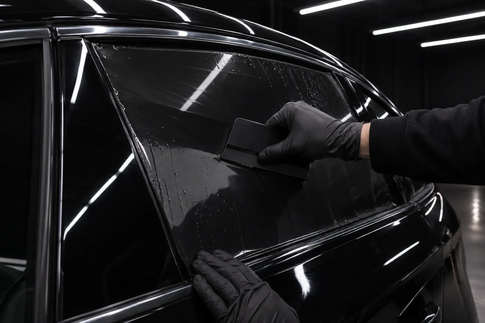
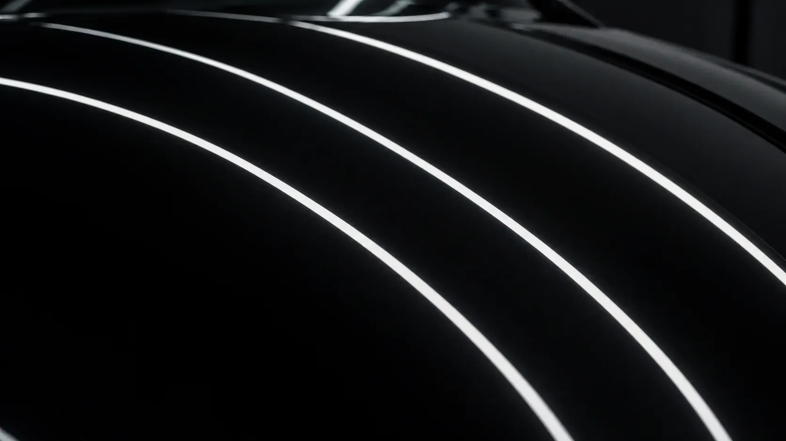

예시 이미지
이럴 때 맡겨요
- 01
새 차를 받고 썬팅부터 하고 싶을 때
- 02
여름철 햇빛과 실내 열기가 부담될 때
- 03
오래된 썬팅에 기포가 생기거나 색이 바랬을 때
- 04
앞유리와 옆유리 농도를 다시 맞추고 싶을 때
작업 순서
- 01
필름 상담
유리마다 필름 종류와 농도를 정해요.
- 02
세정
먼지 하나 없이 유리 안팎을 닦아요.
- 03
재단 · 성형
앞 · 뒷유리 필름은 한 장으로 곡면에 맞게 성형해요.
- 04
붙이기 · 마감
기포 없이 밀착하고 가장자리를 마감해요.

예시 이미지
김프로 시공 기록
블로그에서 더 보기 ↗알아 두면 좋아요
썬팅 농도에 제한이 있나요?
도로교통법상 가시광선 투과율이 앞유리는 70% 이상, 운전석 좌우 옆유리는 40% 이상이어야 해요. 기준 안에서 함께 골라요.
오래된 썬팅도 다시 할 수 있나요?
네, 기존 필름을 깨끗이 떼어 낸 뒤 새로 붙여요. 여름철에 재시공 문의가 특히 많아요.
시공 뒤 바로 창문을 내려도 되나요?
필름이 자리 잡을 때까지 며칠은 창문을 내리지 않는 게 좋아요. 출고할 때 정확히 알려 드려요.